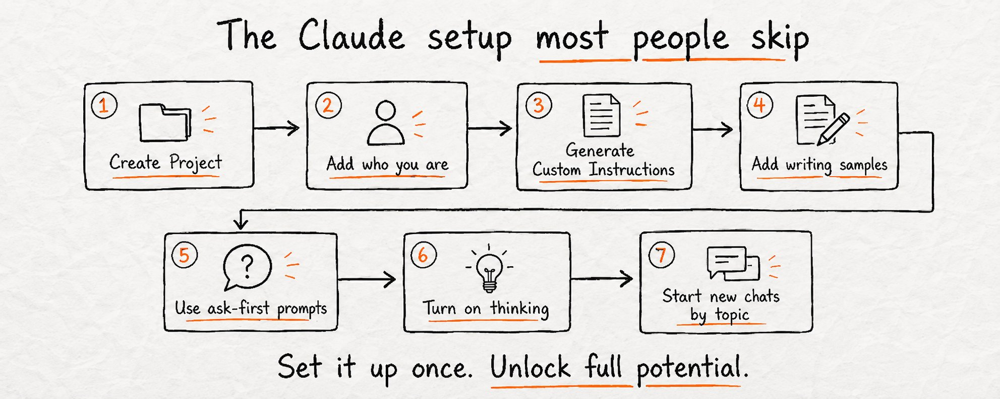
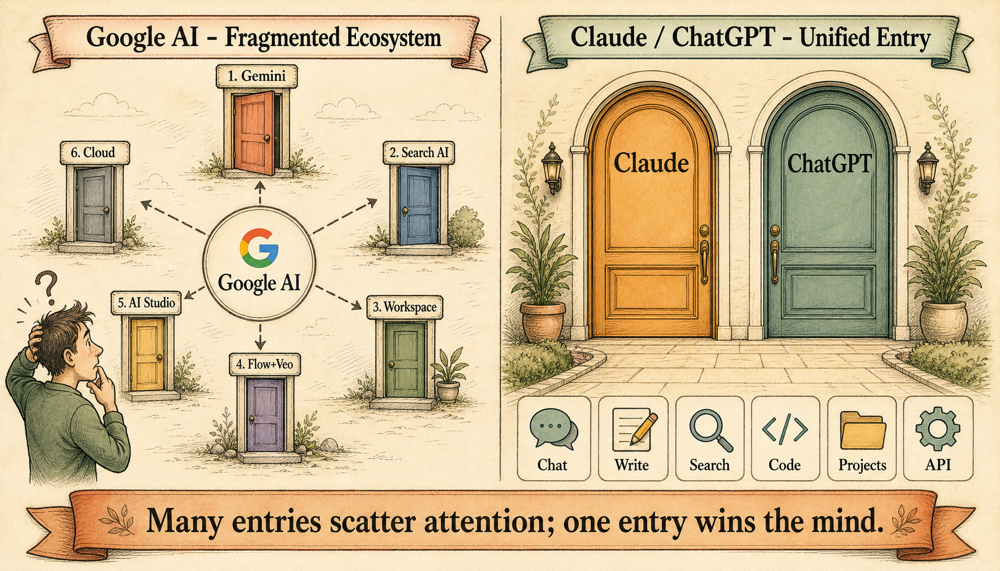

But I want to be upfront about something: Claude's language model is weaker than ChatGPT in some ways. When I asked it to write a Chinese blog post, the output was grammatically correct but stylistically dead. Like a textbook. ChatGPT got the tone right on the first try. I keep that in mind every time I recommend Claude to someone.
What $17/Month Actually Gets You

Claude Pro costs $17/month if you pay annually ($20 monthly). For that, you get:
- Claude Code — terminal agent that reads your repo, edits files, runs tests
- Claude Cowork — async task runner for background work
- Unlimited Projects — persistent memory, custom instructions, file attachments
- Research mode — multi-step web search that cites sources
- Priority access — no rate limit anxiety during peak hours
Max tier starts at $100/month for 5x usage. I don't need it yet. Pro handles my daily workflow fine.
The 7-Step Setup Nobody Talks About

Most Claude vs ChatGPT comparisons miss the single biggest differentiator: Claude's Project system. Here's the setup flow that 90% of users skip, and it's why their Claude feels generic.
- Create a Project — one per work stream
- Tell Claude who you are — your role, stack, preferences
- Generate Custom Instructions — Claude auto-creates these from your profile
- Add writing samples — paste 2-3 examples of your actual code or prose
- Use ask-first prompts — "what would you need to know before doing X?"
- Turn on thinking — for complex tasks, force Claude to show its reasoning
- Start new chats by topic — never mix unrelated tasks in one thread
Do this once. The difference is night and day. Without Projects, Claude is a chatbot. With Projects, it's a specialized assistant that remembers your conventions.
Why Anthropic's Approach Is Smarter

This is where I disagree with most benchmark comparisons. Yes, GPT-5.3 scores higher on some language tasks. But Anthropic's product architecture is better designed.
Look at Google's strategy: 6 different AI products (Gemini, Search AI, Workspace AI, Flow+Veo, AI Studio, Cloud AI) — each with its own interface, billing, and limitations. The analyst who made this diagram nailed it: one primary entry point wins the mind, while scattered entry points lose attention.
Claude and ChatGPT took the opposite approach: one primary door, then expand capabilities inward. Inside that single interface, you get chat, writing, search, coding, projects, and API access. You don't context-switch between 6 apps.
One primary entry point wins the mind; scattered entry points lose attention. — AI Platform Strategy Analysis, 2026
When I switch from claude.com/chat to Claude Code in my terminal, it's the same model, same memory, same projects. There's no "oh this is the coding version, let me re-explain my repo structure." It just knows.
Where Claude Actually Falls Short
Two specific weaknesses I've run into:
First, creative writing. Claude's prose is flatter, less varied in tone. I noticed this when I tried to have it write a Chinese blog post. It was technically correct but read like a machine translation. ChatGPT captured the nuance.
Second, Cowork is still in beta and it shows. Task scheduling works, but error recovery is fragile. If a background task hits an edge case, it doesn't come back and ask — it just fails silently. I check the Cowork dashboard more often than I'd like.
Claude is better at structured reasoning and coding. ChatGPT is better at creative and multilingual writing. Most senior engineers I know run both.
My Actual Daily Workflow

This is a real screenshot of my Cowork interface. You can see what I'm actually using Claude for:
- Local Ollama capabilities — testing which open-source models can replace API calls
- Model pricing comparison — tracking Claude vs OpenAI vs Gemini cost per task
- Account management and traffic analysis — SEO/content performance tracking
- DBS Corporate Ideal Account Transfer — a financial research workflow
None of these are "chat for fun." They're all task-oriented workflows that I run in Projects with attached files and custom instructions. This is how Claude is designed to be used.
Should You Pay for Claude Pro?
My real take after months of daily use: Anthropic's system design is better. Projects, Code, Cowork, and MCP integrations create a cohesive workflow that OpenAI hasn't matched. But OpenAI's base model is stronger at pure language tasks.
Choose Claude if
- You're building software
- You manage workflows
- You do research with sources
- You want persistent project memory
Choose ChatGPT if
- You write novels or marketing copy
- You need multilingual content
- You want creative writing help
- You prefer a simpler chat interface
Most senior engineers I know run both. Claude for architecture and system design. ChatGPT for copy and creative refinement.
If you can only afford one and your work involves code or structured reasoning, Claude Pro at $17/month is the better investment. The Projects system alone justifies the price. It's the difference between "using AI" and "having an AI teammate."
If you try Claude and it feels "just okay," you probably skipped the Project setup. Go to claude.com → Projects → New Project → fill out the profile. Add 2-3 writing samples. Then try the same prompt again. The difference will surprise you.
Ready to try Claude?
Disclosure: This post contains affiliate links. If you sign up through our links, we earn a commission at no extra cost to you.